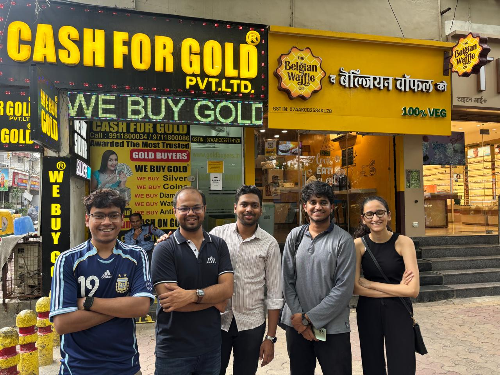

What this directory covers
MalviyaConnect lists 90 businesses across Malviya Nagar and the lanes around it — the main market, the ITI road, Khirki Extension and Shivalik. The split is 21 food & cafes, 22 shopping, 24 beauty & healthcare, 23 local services.
Every entry was checked by hand: address, phone number and category confirmed rather than taken on trust from a scrape. Where a listing looked stale or the business had moved, it was dropped.
Why Malviya Nagar
Replace this paragraph with your group’s reasoning — why you picked this neighbourhood, what its service ecosystem looks like, and which gaps you found in how it is currently covered online. This is section 1 of the report, so it is worth writing once and using twice.
The market, photographed


